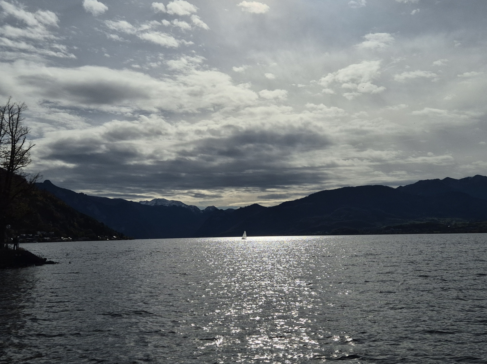
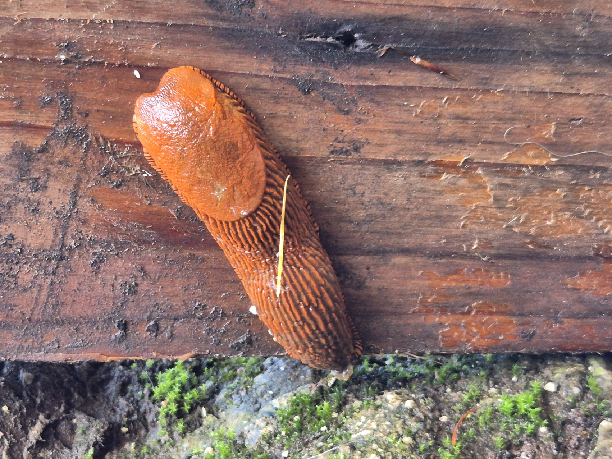
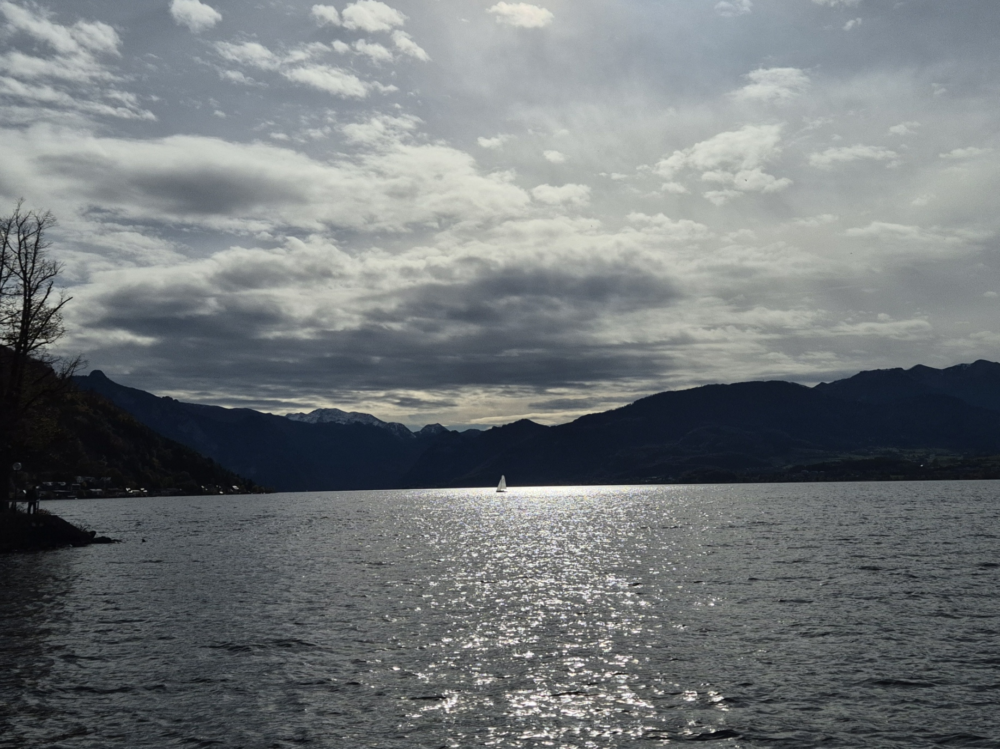
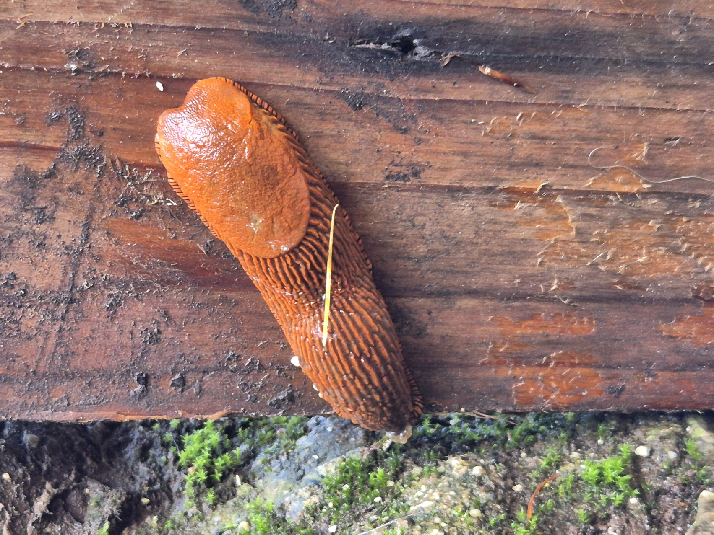

Our lecturer, Volker Christian, led the module with contagious enthusiasm and deep knowledge of IoT.
We built a full end‑to‑end pipeline: data is transmitted by a LoRaWAN device to a local gateway; the gateway forwards to The Things Network (TTN); from TTN, we use MQTT to pull the data onto a Raspberry Pi, and then forward it to a front‑end dashboard for live visualization.
Week 1 — Connectivity + Architecture
Configured the LoRaWAN device and established the link to The Things Network. We were introduced to the full IoT architecture we’d use to collect and visualize sensor data.
Week 2 — Data Flow + Storage
Set up a database to store incoming sensor readings. Implemented MQTT subscriptions from TTN on the Raspberry Pi and persisted the data reliably.
Week 3 — Sensor Build + Dashboard
Assembled the physical sensor device: LoRaWAN antenna/device, GPS, TDS, pH, temperature, and turbidity sensors, driven by an ESP microcontroller. Ensured the dashboard reflected the live data streams end‑to‑end.
Outcome: a complete pipeline — LoRaWAN device → Gateway → TTN → Raspberry Pi (MQTT) → Database → Front‑end dashboard — demonstrated during our final presentation.
Process: Why → How → What
Why: We needed reliable long‑range, low‑power telemetry for outdoor sensing. LoRaWAN via TTN fit the constraints better than Wi‑Fi or cellular for a student prototype.
How: I provisioned the device in TTN, confirmed the payload format, subscribed via MQTT on the Raspberry Pi, persisted records in a lightweight local database, and bound the dashboard to live topics.
What: A working, repeatable pipeline that streams GPS/TDS/pH/temperature/turbidity to the dashboard with timestamped, stored measurements.
My Specific Contributions
- Final sensor building (fitting all sensors and components into our enclosure).
- Defined a clear payload schema and version tag to avoid decode ambiguity later.
- Designed the DB table structure for time‑series inserts and basic querying.
- Connected the dashboard to live data.
Key Insights I Gained
- Payload discipline: Agreeing on units, ranges, and a version flag saves hours of debugging later.
- MQTT topic hygiene: Consistent topic paths (e.g.,
v3/<app-id>@ttn/devices/<device-id>/up) make subscribers simpler and safer. - Time is data: Using gateway‑received timestamps prevents device clock drift from corrupting trends.
- Signal vs. noise: pH and turbidity benefit from a small rolling median to reduce spikes without hiding events.
Decisions & Trade‑offs
- Chose LoRaWAN for range/power at the cost of low bandwidth — acceptable for compact sensor payloads.
- Kept storage lightweight on the Pi to prioritize a demonstrable pipeline over heavy analytics.
- Favored a simple, readable dashboard first; deeper analytics come after data quality is proven.
Challenges I Hit (and How I Solved Them)
- Topic mismatch: Initial MQTT subscription missed messages; fixed by matching TTN v3 topic format and application ID.
- Decode errors: Byte/hex confusion created wrong TDS values; standardized the decoder and documented units.
Personal note: I stayed intentionally curious — asking many questions to clarify requirements and to help my peers unblock. I’ll continue documenting my “why → how → what” so the process is as visible as the result.

 


